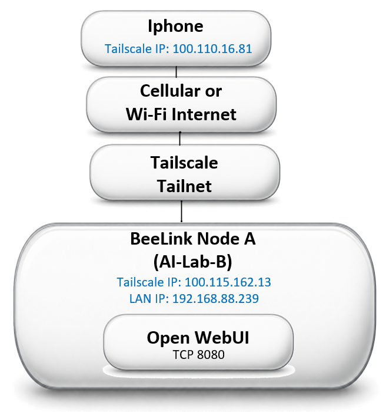

← Part 1: Local LLM Setup · AI Lab Portal Home
Part 1 established the local AI environment on Node A (Beelink SER9). Part 2 extends that environment to other devices — first over the local network, then from anywhere at all, using Tailscale.
This guide documents two milestones: getting Open WebUI reachable from an iPhone on the same Wi-Fi network as Node A (July 4, 2026), and then reaching it from the iPhone over cellular data, off that network entirely, using Tailscale (July 5, 2026).

Scope
This page documents the working mobile access path using Tailscale.
Tailscale is a mesh VPN — it creates a private, encrypted network (a "tailnet") between devices, no matter where each one physically is. Every device that joins gets its own stable address on that private network, and can reach every other device on it directly, as if they were all sitting on the same LAN. We're using it here because the lab's nodes and the phones that need to reach them aren't on the same physical network: Node A sits on the home Wi-Fi, while a phone might be on cellular data, a coffee shop's Wi-Fi, or anywhere else. Tailscale bridges that gap without exposing Open WebUI to the open internet or requiring router port-forwarding.
The iPhone does not connect directly to Node A through its local LAN address. Instead, the iPhone reaches Node A through the Tailscale tailnet, using Node A's Tailscale IP address.
Working path:
Access URL:
Tailscale MagicDNS now resolves the ai-lab-b hostname directly, so the raw Tailscale IP (100.115.162.13:8080) no longer needs to be memorized or bookmarked — the hostname works from any device on the tailnet. Node A still has LAN IP 192.168.88.239, but that address is documented only as its local network address, not the mobile access path.
Goal #
Allow an iPhone — whether on Wi-Fi or cellular data — to use Open WebUI running on Node A.

Baseline Configuration #
| Hardware | Beelink SER9 |
|---|---|
| Operating System | Windows 11 |
| Active Network Interface | Wi-Fi 2 |
| LAN Address | 192.168.88.239 |
| Subnet Mask | 255.255.255.0 |
| Default Gateway | 192.168.88.1 |
| Tailscale Address | 100.80.190.11 |
| iPhone LAN Address (during testing) | 192.168.88.240 |


Tailscale was already present on the node during this phase, but signed into the wrong identity — see Tailscale Account / Tailnet Lessons. Once corrected, the node's Tailscale address changed to 100.115.162.13, used throughout the remote-access phase below.
Tailscale identities (after correction)
Node A (ai-lab-b) | 100.115.162.13 |
|---|---|
| Node B | 100.81.51.91 |
iPhone (iphone171) | 100.110.16.81 |
All three devices are members of the same shared AI Lab tailnet. Node A initially joined a different, personal tailnet by mistake — see Tailscale Account / Tailnet Lessons.
Initial Open WebUI Binding #

127.0.0.1 is the loopback interface — Open WebUI was reachable only from the node itself. Other devices on the LAN could not connect to that listener.
The owning process was identified as the Open WebUI Desktop app's bundled Python runtime:

explicitly launching with:

A server bound to 127.0.0.1 only accepts connections that originate from the same machine — that's why the iPhone couldn't reach it yet.
Required Open WebUI Binding #
0.0.0.0 tells the server to listen on all available IPv4 interfaces, not just loopback. Clients never browse to 0.0.0.0 itself — the iPhone instead uses the node's actual LAN address:
Open WebUI Desktop Configuration Investigation #
The Open WebUI Desktop config file included:

serveOnLocalNetwork: falseAttempts to change this setting did not produce a persistent LAN-enabled startup — the Desktop app continued launching with --host 127.0.0.1 on its own. Persistent LAN-enabled Open WebUI startup remains unresolved. The server that worked for this session was launched manually, and the window running it has to stay open.
Initial iPhone Failures #
Early symptoms included several browsers attempting HTTPS instead of plain HTTP, secure-connection errors, roughly 60-second connection timeouts, an Invalid HTTP request received log line from Open WebUI, and later a WebSocket WinError 121 semaphore timeout. None of this yet identified whether the real problem was Open WebUI, Windows Firewall, the Windows network profile, or browser protocol behavior.


Two different browsers, same dead end — a good early sign the problem wasn't the browser.
Basic Network Connectivity Test #
This proved basic IP connectivity between the two devices — it did not prove that TCP port 8080, or any application port, was actually reachable.
Python HTTP Server Diagnostic Test #
To take Open WebUI out of the test path entirely, a plain Python HTTP server was started:
The iPhone still couldn't reach http://192.168.88.239:8000/, and no request showed up in the server console. That was actually useful: it removed Open WebUI as a suspect, confirmed the failure was at the network/firewall layer, and pointed the investigation at Windows itself.
Windows Network Profile Discovery #
The home Wi-Fi interface was classified Public. Windows applies much more restrictive inbound behavior to Public networks than Private ones. Changing it:
Temporary Port 8000 Firewall Rule #
After this rule was added, the iPhone successfully reached the Python server:
This was the decisive network-layer validation — the LAN path itself was proven to work.
Side Discovery: Portal Mobile Preview #
While that temporary Python server was still running, the AI Lab Portal's own local files were browsed to from the iPhone and loaded successfully — including this Field Guide and its images. That's a useful secondary discovery: the Portal can be previewed from a mobile device on the local LAN before changes are pushed or deployed.
One caution, though: the temporary server was started from the Windows user profile root, which exposed the entire directory tree beneath it to any device that could reach port 8000 — not just the Portal folder. That's not a configuration to leave running. For future mobile-preview testing, the server should be started from inside the Portal directory specifically, so only that folder is exposed. See Security and Cleanup.
Open WebUI Firewall Rule #
With the manually launched, LAN-bound Open WebUI server running:
the iPhone browsed to http://192.168.88.239:8080/ and Open WebUI loaded.
Final Validation #

No screenshot of the loaded Open WebUI chat screen itself survived the session, but this is stronger proof than a photo would be: it's the network stack itself confirming a live, established connection from the iPhone's address to the Open WebUI port.
Lessons Learned
- A server listening on
127.0.0.1is not reachable from other LAN devices. - Binding to
0.0.0.0allows a server to accept LAN connections, subject to firewall configuration. - A successful ping does not prove an application port is reachable.
- A minimal Python HTTP server is a good way to separate application failures from network/firewall failures.
- Windows' Public network profile can silently block inbound LAN access that a Private profile allows.
- Explicit firewall rules give predictable inbound access.
- Browser HTTPS upgrades can produce misleading errors when testing an HTTP-only service.
- Verify the server is actually listening before blaming the client device.
- Persistent LAN-enabled Open WebUI startup was never fixed at the Desktop-app level, but a one-click Start/Stop script (see Startup Automation) makes that a non-issue in practice.
- Temporary diagnostic servers and firewall rules should be removed once they're no longer needed.
Security and Cleanup
The temporary Python HTTP server exposed the full directory tree beneath the Windows user profile — not just the Portal folder — to any device that could reach port 8000.
Required cleanup on the node:
The dedicated Open WebUI port-8080 firewall rule should be kept. For future Portal mobile-preview testing, start the server from inside the Portal folder specifically:
Startup Automation #
The Open WebUI Desktop app never reliably picked up a LAN-enabled launch on its own (see Open WebUI Desktop Configuration Investigation). Rather than keep fighting the Desktop app's config, a pair of one-click batch scripts now bring the whole stack up and down instead — checking whether Ollama and Open WebUI are already running, starting Ollama if not, warming up the default model before Open WebUI comes up, and launching Open WebUI itself.
Start AI Lab
Stop AI Lab
This isn't a true auto-start-on-boot service — it's still a manual double-click — but it turns "reconstruct the launch command from memory" into "run one script," which is most of what actually mattered day to day.
Troubleshooting Notes #
The Open WebUI Desktop app's own window sometimes showed a plain Failed to fetch error, even while the underlying server was healthy. Browsing directly to the server proved it was fine:
The Desktop app's own shell turned out to be less reliable than just using a browser — which is also, conveniently, exactly what the iPhone has to do anyway. Browser access became the preferred path for both troubleshooting and everyday use.
Remote Access with Tailscale #
With LAN access working and the startup scripts in place, the next step was reaching Open WebUI from the iPhone over cellular data — off the home Wi-Fi entirely — using Tailscale.
The first attempt didn't work: Node A's Tailscale client was signed into the wrong identity, on a personal tailnet rather than the shared AI Lab tailnet that Node B and the iPhone already belonged to. Two devices on different tailnets can't see each other over Tailscale, no matter how correctly everything else is configured.
The fix was to sign Node A out of Tailscale and back in, explicitly selecting the shared AI Lab tailnet this time instead of the personal one:
After signing in under the correct tailnet, the join request still needed the tailnet admin to approve it before Node A actually showed up for the other members — a deliberate access control step, not a bug.
Once approved, tailscale status showed all three devices on the same tailnet:
With Wi-Fi turned off, the iPhone loaded Open WebUI over cellular data using Node A's Tailscale address:
Login succeeded, qwen3:8b was selected, and a test question — "Who invented AI?" — got a real response back, fully over cellular with no Wi-Fi involved at all.
Tailscale Account / Tailnet Lessons #
Lessons learned
- A device's sign-in identity and its Tailscale tailnet membership are two different things — signing in doesn't automatically put you on the tailnet you meant to join.
- It's easy to land on the wrong tailnet during sign-in, especially when one person has both a personal account and a shared/admin account available.
- Two devices on different tailnets are invisible to each other, even though both individually show as "connected" to Tailscale.
- Joining a new tailnet can require the tailnet admin's approval before the device actually appears for other members.
tailscale logoutfollowed bytailscale login, explicitly selecting the correct tailnet at sign-in, is the fix.
Security Note #
Safari flags the connection as "Not Secure" because Open WebUI is served over plain HTTP, not HTTPS — whether reached via the raw IP or the ai-lab-b MagicDNS hostname, there's no TLS certificate behind it. The traffic itself isn't unprotected, though: Tailscale encrypts the device-to-device tunnel itself, so the connection is private between the iPhone and Node A even without HTTPS layered on top.
A cleaner long-term fix would still be HTTPS — the MagicDNS hostname (ai-lab-b) is now in use in place of the raw IP, resolving the naming half of this note.
What's Next
← Part 1: Local LLM Setup · Part 3: Reliable Remote Access → · AI Lab Portal Home